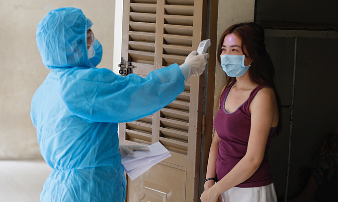

|

|
TP HCM thí điểm cách
ly F1 tại nhà theo
'công thức 14-14'
TP HCM sẽ thực hiện
linh hoạt việc thí
điểm cách ly F1 tại
nhà theo "công thức
14-14" (14 ngày cách
ly tập trung, 14 ngày
tại nhà) theo hướng dẫn Bộ Y tế.
Thông tin được Chủ tịch UBND TP HCM Nguyễn Thành ...
|